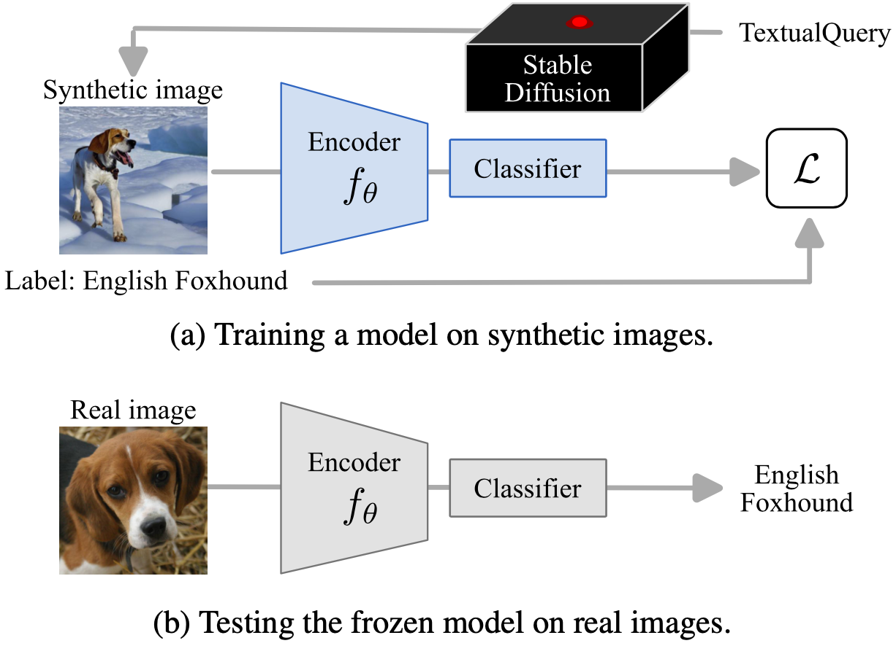
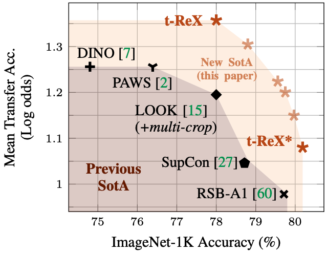
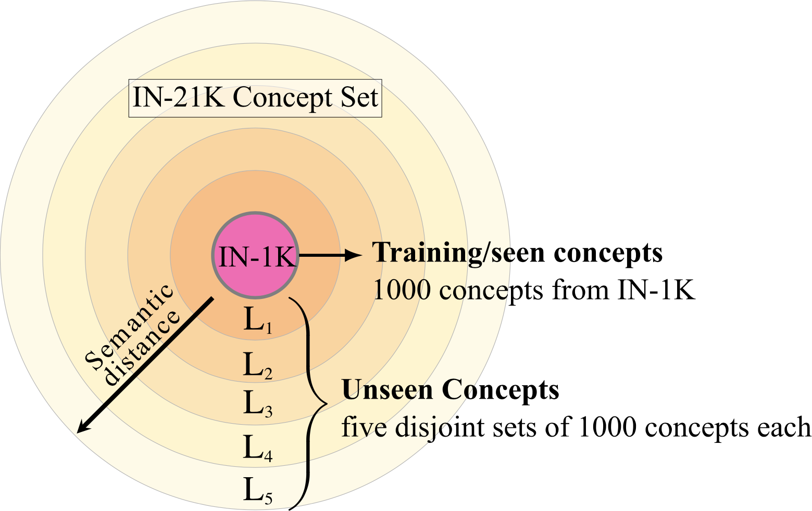
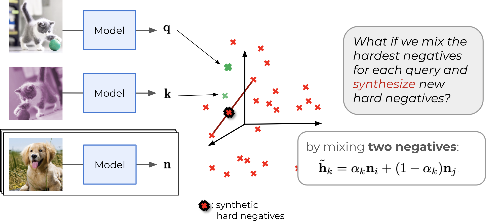
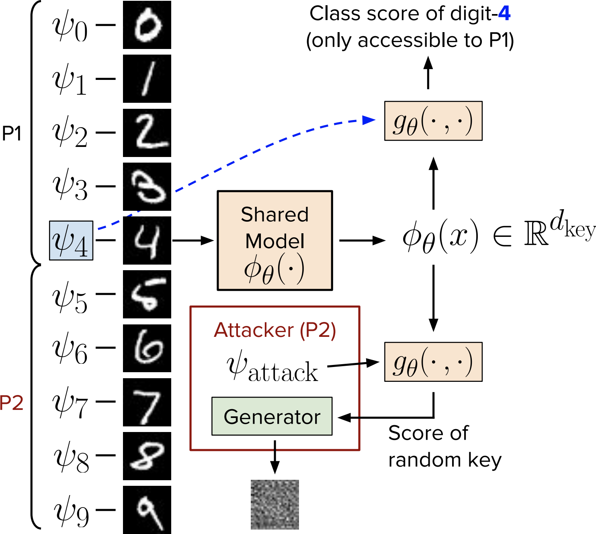
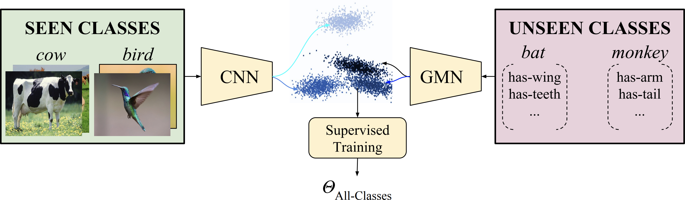

|
Research Scientist at NAVER LABS Europe I was a doctoral researcher at NAVER LABS Europe and Inria Grenoble (the THOTH Team) in France, under the supervision of Yannis Kalantidis, Diane Larlus and Karteek Alahari. My PhD focused on learning general-purpose visual representations from images. I received my M.Sc. degree from the Computer Engineering Department at Bilkent University in Türkiye, where I worked with Gokberk Cinbis on learning data-efficient visual classification models. Before that, I received my B.Sc. from the Electrical and Electronics Engineering Department at Anadolu (now Eskisehir Technical) University in Türkiye. Email / CV / Google Scholar / Twitter / Github |
|
|
|
I'm broadly interested in computer vision problems. If I have to be more specific, I like working on learning visual representations from imagery data with different forms of supervision (including no supervision at all!) so that they are useful for a range of vision tasks. |
|  |
Mert Bulent Sariyildiz, Karteek Alahari, Diane Larlus and Yannis Kalantidis CVPR 2023 Recent text-to-image generative models, generate fairly realistic images. Could such models render real images obsolete for training image prediction models? We answer part of this provocative question by questioning the need for real images when training models for ImageNet-1K classification. We show that models trained on synthetic images exhibit strong generalization properties and perform on par with models trained on real data. |
|  |
Mert Bulent Sariyildiz, Yannis Kalantidis, Karteek Alahari and Diane Larlus ICLR 2023
We revisit supervised learning on ImageNet-1K and propose a training setup which
improves transfer learning performance of supervised models. |
|  |
Mert Bulent Sariyildiz, Yannis Kalantidis, Diane Larlus and Karteek Alahari ICCV 2021
We propose a benchmark tailored for measuring concept generalization
capabilities of models trained on ImageNet-1K. |
|  |
Yannis Kalantidis, Mert Bulent Sariyildiz, Noe Pion, Philippe Weinzaepfel and Diane Larlus NeurIPS 2020
For contrastive learning, sampling more or harder negatives often improve
performance.
We propose two ways to synthesize more negatives using the MoCo framework. |

|
Mert Bulent Sariyildiz, Julien Perez and Diane Larlus ECCV 2020
Images often come with accompanying text describing the scene in images.
We propose a method to learn visual representations using (image, caption)
pairs. |
|  |
Mert Bulent Sariyildiz, Ramazan Gokberk Cinbis and Erman Ayday Pattern Recognition, Vol. 104, August 2020
Vanilla collaborative learning frameworks are vulnerable to an active adversary
that runs a generative adversarial network attack.
We propose a classification model that is resilient against such attacks by
design. |
|  |
Mert Bulent Sariyildiz and Ramazan Gokberk Cinbis CVPR 2019, oral presentation
Zero-shot learning models may suffer from the domain-shift due to the difference
between data distributions of seen and unseen concepts.
We propose a generative model to synthesize samples for unseen concepts given
their visual attributes and use these samples for training a classifier for both
seen and unseen concepts. |
|
|
|
Huge thanks to Jon Barron, who provides the template of this website. |